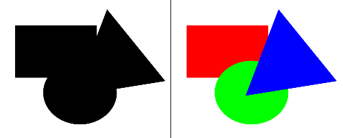

Dairy Data Analytics
Interpretation and visualization of data in dairy herds
Miel Hostens, Kristof Hermans, Willem Waegeman, Sander Moerman, Jenne De Koster, Mieke Van Eetvelde, Bonny Van Ranst and Geert Opsomer
Data science
Is changing at an incredible speed

It's more fun to compute
Cost of HARDWARE
Is changing at an incredible speed, 2 examples:
The future of hardware
“The observation that, over the history of computing hardware, the number of transistors in a dense integrated circuit has doubled approximately every 18 months.”
Moore's law

Future of software languages
Community driven change every 3 years.

Future of software
function which_language(age, skills ) {
if( age > 5, skill = 0 )
{randomselect(
R
SAS
JAVA/SCALA
PYTHON
SQL)
}
}
Not easy to choose, trends are changing
year to year.
I changed 4 times this year.
Future of software packages

Community driven every ??? years
Extremely active Apache Software community.
What is the challenge?
"The human ability to gather data has outpaced the speed of data analysis (Cole et al.,2012)"

Characteristics
of Big Data
- Volume
- Velocity
- Variety
- Veracity
- Validity
- Volatility
Volume
- Full bovine genome ~ 3 Gb
- Currently this can be stored in around 1 Gb for DNA per 1000 cows
- 5-10 Gb for RNA seq per cow
- A result of ease of access to the internet, unstructured data (eg. free text and pictures) has emerged and is believed to account for 85% of all data in the world.
Velocity
- The rate at which data flows and changes into the dataset has exponentially increased, following a similar pattern to that of volume
- New data is continuously flowing in during clinical trials instead of at the end of the trial -> need for version control
Variety in data sources
- Structural database heterogeneity, syntax heterogeneity, implementation heterogeneity and semantic heterogeneity hold this Big Data to get properly utilized.
Variety in data dimensions

Variety in people
Veracity & Validity
refers to the biases, noise and correctness of the data.

Rarely seen in animal science to report data quality!
Report data quality
I strongly advocate the reporting data quality in animal science!
- Number of missing values
- Number of outliers, approach to outliers
The fact that it is missing, or that it is an outlier is a new feature which can be analyzed!
Volatility
Refers to how long is data valid and how long should it be stored. In this world of real time data you need to determine at what point is data no longer relevant to the current analysis.
Who pays for the bill to keep the data stored somewhere, after the end of a trial?
Solutions
for data consumers
- Aggregation into KPI
- Visualization
Key Performance Indicators
- Simple aggregation such as averages, sum,...
- Average days in milk
- Average days open
- Average days dry
- Complex computations
- Transition cow index
- Predicted 305d yield
- Pregnancy rate/risk
Features of a KPI
Time dimension
Daily observations can be grouped...
... into weeks ...
... into 3-weekly cycles ...
... into months ...
... into quarters ...
... into years ...
Cross-sectional versus Cohort
A cross-sectional analysis focusses on measures within a given time frame which might include observations on different animals
A cohort analysis focusses on observations of the same animals over time
Other dimensions
- At herd level
- Spatial - region, country
- People - eg. inseminator, milker, ...
- At animal level
- Age groups (eg. categories by months of age)
- Parity groups (eg. parity 1,2,3+ vs 1, 2-3, 4-5, 5+)
- Lactation stage (eg. categories by days in milk)
- Animal groups (eg. only cows from selected sire)
- People (eg. inseminator, milker, ...)
Group size
Number of observations per group very important.
KPI Pitfalls
The average age at first calving was 23.5 months during the last year (n=52)
What can we conclude
... about last years heifer reproduction?
Variance
Mean is the same in both groups, but interpretation is different. Who is routinely reporting variance...
Variance & Skewness
Outliers will heavily influence the mean, the median will not be influenced but who is using it...
The average historic calving interval was 400 days over the last year
What can we conclude
... about current cow fertility?
Lag
Lag is defined as the period between the moment an event occurs and the moment it is measured
The average heat detection rate was 30 during the last month
What can we conclude
... about the heat detection rate on this farm?
Momentum
The responsiveness of averages to recent changes in performances
The average historic calving interval was 400 days over the last year
What can we conclude
... about the entire herd reproduction?
Bias
Bias can be caused by the inclusion or exclusion of specific individuals during the calculation of a KPI
- First parity animals don't influence the historic calving interval
- Cows that fail to become pregnant would heavily influence days open once pregnant
- ...
Conclusion
KPI contain useful information about farming processes and allows veterinarians to compare the current performances with the predefined objectives
However:
- Need for deep domain knowledge
- Basic knowledge of data analysis
Visualisation
A useful tool to avoid the misinterpretation of numbers
Example 1
| Item | Average |
|---|---|
| Milk production | 20 kg |
| Days in milk | 50 days |
Gestalt Principles
Six major laws that play a major role in the unconscious interpretation of charts (Wertheimer, 1938).

The sixth and most important law is the law of “Prägnanz”. The brain loves simple elements instead of complicated shapes, therefore this law is also called the law of simplicity.
Find the outlier
Order of Gestalt Laws
Look for all pregnant animals
Desceptive visualisation
Misrepresentation of data in charts, leading towards
- Message reversal
- Message exaggeration/understatement
Example 1
What is wrong
Example 1
Abusing proximity law
Correct graph on the right
Example 2
Example 2
Correct graph on top
Example 3
Which parity has to most animals on farm?
Example 3
Even worse
Example 3
Use area charts instead of pie charts
General guidelines
Data-ink concept
- above all, show the data
- maximize the data-ink ratio within reason
- erase non-data ink within reason
- erase redundant data-ink
- revise and edit
Example 1


Example 2
Real life example
Larger dairy farm in EU
(n~300 animals milking)


Real life example
Small dairy farm in EU
(n~45 animals milking)